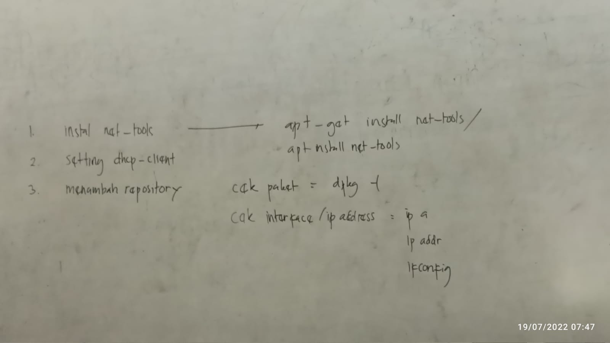
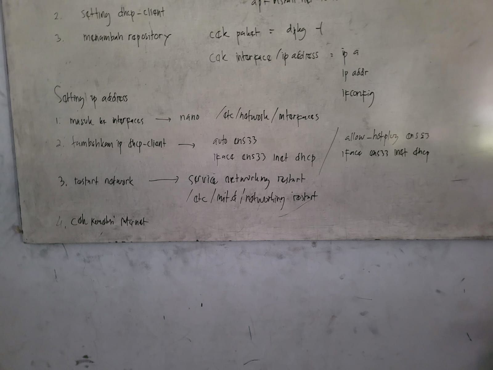

PERTEMUAN 15 JULI 2022 - ASJ
-
PERINTAH DASAR DEBIAN :
-
mkdir (make direktory), untuk membuat direktori atau membuat folder
- cd (change direktory), untuk pindah direktori
-
rmdir (remove direktory), untuk menghapus direktori atau menghapus
folder
- ls (list), melihat isi direktori
- shutdown now, untuk mematikan debian
- clear, untuk membersihkan halaman kerja
- root, untuk masuk ke mode super user
-
SUMBER :
PERTEMUAN 19 JULI 2022 - ASJ
-
MENGINSTAL PAKET NET-TOOLS DI DEBIAN : Net-tools merupakan
paket yang didalamnya terdapat tool-tool jaringan seperti arp, hostname,
ifconfig, netstat, rarp, route, plipconfig, slattach, mii-tool, iptunnel
and ipmaddr.
-
Untuk menginstal paket net-tools ketikan perintah :
apt-get install net-tools
- 
-
Cara setting DHCP CLient :
Cara Seting DHCP Client di Debian 8.5
-
Menambah repository pada debian :
Tutorial Menambah Repository di Debian
-
Perintah untuk melihat paket yang sudah terisntal di debian, ketikan
perintah : dpkg -l
-
Perintah untuk cek ip yang ada di didebian :
- 
-
CARA SETTING IP ADDRES DI DEBIAN :
-
 Ketikan perintah :
nano /etc/network/interfaces
Ketikan perintah :
nano /etc/network/interfaces
-
Untuk keluar dari sesi ini tekan : ctrl + o (untuk save) kemudian
tekan Enter, tekan ctrl + x (untuk keluar)
- Kemudian ketikan perintah : service networking restart
PERTEMUAN 22 JULI 2022 - ASJ
-
MENGINSTAL PAKET SSH SERVER DI DEBIAIN : SSH adalah
aplikasi pengganti remote login seperti telnet, rsh, dan rlogin, yang
jauh lebih aman. Fungsi utama aplikasi ini adalah untuk mengakses mesin
secara remote. Sama seperti telnet, SSH Client menyediakan User dengan
Shell untuk remote ke mesin.
- Ketikan perintah : apt-get install openssh-server
- Kemudian ketikan perintah : nano /etc/ssh/sshd_config
-
 Untuk keluar dari sesi
ini tekan : ctrl + o (untuk save) kemudian tekan Enter, tekan ctrl +
x (untuk keluar)
Untuk keluar dari sesi
ini tekan : ctrl + o (untuk save) kemudian tekan Enter, tekan ctrl +
x (untuk keluar)
- Ketikan perintah : service ssh restart
-
 Masuk ke aplikasi PUTTY, pada
bagian Host Name masukan ip address debian yang sudah kita setting di
bagian interfaces. Kemudian klik open
Masuk ke aplikasi PUTTY, pada
bagian Host Name masukan ip address debian yang sudah kita setting di
bagian interfaces. Kemudian klik open